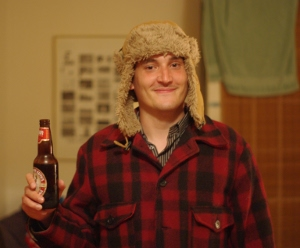

Emmanuel Prochasson's homepage
Presentation
I ain't no researcher anymore, this page is for archive purpose only
Hot news
- 2014. Added latest publication
- 2011. I'm free, at last \o/ And now have the coolest job in the world.
- July, 2010, small update. Added one publication, small fixes. Nothing really fancy. Resume normal life.
- January, 2010, started a new position at the Hong-Kong University of Science and Technology, HLTC, as Research Associate.
- January, 4th, 2010, finally got my PhD. Added link to the thesis and the defense slides.
- September, 9th, 2009, Added link to MT Summit'09 paper, bibtex, poster and poster sources (SVG), and to TALN'09 paper, bibtex and presentation. Beamer sources for TALN presentation are available, without pictures (but I can give them if needed -- it's tricky to build a complete pack for that, especially since I don't have the right to redistribute some logos). It can be usefull if you want to use some of the tricks I used (such as, including Japanese symbols in LaTeX documents).
Publications
On comparable corpora
- (en) Emmanuel Morin, Béatrice Daille and Emmanuel Prochasson. Bilingual Terminology Mining from Language for Special Purposes Comparable Corpora. In Building and Using Comparable Corpora. Sharoff, S., Rapp, R., Zweigenbaum, P., and Fung, P. (eds), p.265-284, Springer. 2013.
- (en) Emmanuel Prochasson and Pascale Fung, Rare word translation extraction from aligned comparable documents, 49th Annual Meeting of the Association for Computational Linguistics (ACL’11), Portland, USA
- (en) Pascale Fung, Emmanuel Prochasson, Simon Shi, Trillions of Comparable Documents, 3rd workshop on Building and Using Comparable Corpora, LREC2010, Malta, May 2010. (bibtex--direct link to proceedings)
- (fr) Emmanuel Prochasson, Alignement multilingue en corpus comparables spécialisés, Thèse de doctorat, Université de Nantes. Supervised by Béatrice Daille & Emmanuel Morin (defense slides)
- (en) Emmanuel Prochasson, Emmanuel Morin, Kyo Kageura Anchor points for bilingual lexicon extraction from small comparable corpora Machine Translation Summit, Ottawa, Canada, august 2009 (Poster,sources, bibtex)
- (fr) Emmanuel Prochasson, Emmanuel Morin Points d'ancrage pour l'extraction lexicale bilingue à partir de petits corpus comparables spécialisés, Traitement Automatique des Langues, numéro 50, volume 1, 2009
- (fr) Emmanuel Prochasson, Emmanuel Morin Influence des points d'ancrage pour l'extraction lexicale bilingue à partir de corpus comparables spécialisés, Conférences sur le Traitement Automatique des Langues Naturelles, Senlis, France, june 2009 (presentation, sources, bibtex)
- (en) Emmanuel Prochasson, Kyo Kageura, Emmanuel Morin, Akiko Aizawa, Looking for Transliterations in a Trilingual English, French and Japanese Specialised Comparable Corpus, LREC Workshop on Comparable Corpora (LREC'08), Marrakech, Maroc, mai 2008 -- direct link to workshop proceedings -- bibtex
- (fr) Emmanuel Prochasson, Observation des translittérations dans un corpus comparable spécialisé trilingue, Journée des Doctorants de l'École doctorale STIM, avril 2008. Best oral presentation.
On recognition of handwritten messages
- (en) Emmanuel Prochasson, Christian Viard-Gaudin, Emmanuel Morin, Language Models for Handwritten Short Message Services, International Conference on Document Analysis and Recognition (ICDAR'07), Curitiba, Brésil, septembre 2007 (draft but free, final and not that different version available here) -- bibtex. Received Best Student Paper Award. Oral presentation slides
- (fr) Emmanuel Prochasson, Emmanuel Morin, Christian Viard-Gaudin Vers la reconnaissance de mini-messages manuscrits, Actes du 26e Colloque International sur le Lexique et la Grammaire (LG'07), Bonifacio, France, 2007. actes du colloque Lexique Grammaire -- bibtex
- (fr) Emmanuel Prochasson, Reconnaissace de Mini-Message manuscrits, mémoire de DEA, 2006
Time Waster
If you're not my boss or likely to become my boss:
Poke me
this website is web 0.2 compliant

{kind=link}